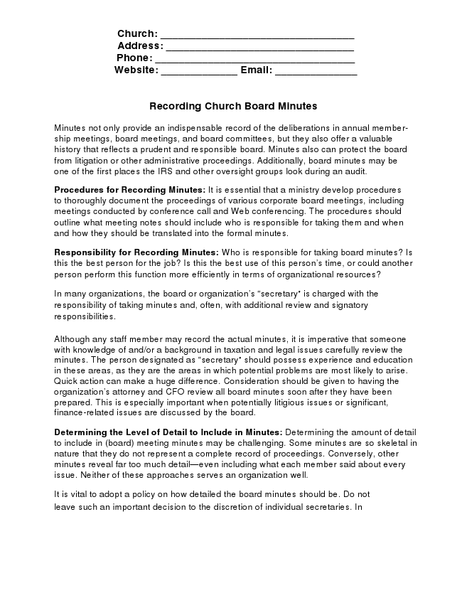

Church: _________________________________ Address: ________________________________ Phone: __________________________________ Website: _____________ Email: ______________
Recording Church Board Minutes
Minutes not only provide an indispensable record of the deliberations in annual member- ship meetings, board meetings, and board committees, but they also offer a valuable history that reflects a prudent and responsible board. Minutes also can protect the board from litigation or other administrative proceedings. Additionally, board minutes may be one of the first places the IRS and other oversight groups look during an audit.
Procedures for Recording Minutes: It is essential that a ministry develop procedures to thoroughly document the proceedings of various corporate board meetings, including meetings conducted by conference call and Web conferencing. The procedures should outline what meeting notes should include who is responsible for taking them and when and how they should be translated into the formal minutes.
Responsibility for Recording Minutes: Who is responsible for taking board minutes? Is this the best person for the job? Is this the best use of this person’s time, or could another person perform this function more efficiently in terms of organizational resources?
In many organizations, the board or organization’s “secretary” is charged with the responsibility of taking minutes and, often, with additional review and signatory responsibilities.
Although any staff member may record the actual minutes, it is imperative that someone with knowledge of and/or a background in taxation and legal issues carefully review the minutes. The person designated as “secretary” should possess experience and education in these areas, as they are the areas in which potential problems are most likely to arise. Quick action can make a huge difference. Consideration should be given to having the organization’s attorney and CFO review all board minutes soon after they have been prepared. This is especially important when potentially litigious issues or significant, finance-related issues are discussed by the board.
Determining the Level of Detail to Include in Minutes: Determining the amount of detail to include in (board) meeting minutes may be challenging. Some minutes are so skeletal in nature that they do not represent a complete record of proceedings. Conversely, other minutes reveal far too much detail—even including what each member said about every issue. Neither of these approaches serves an organization well.
It is vital to adopt a policy on how detailed the board minutes should be. Do not leave such an important decision to the discretion of individual secretaries. In
Recording Church Board Minutes Page 2 of 10
deciding how detailed minutes should be, consider how a court might judge board actions if the minutes were examined. Most courts use the “business judgment” rule to decide if directors are carrying out their duties. This rule does not look so much at what a board has done as how the board went about its actions. A director must act prudently, in good faith, and in the best interests of the corporation. No one has a crystal ball, and the best-intentioned decisions will sometimes turn out horribly wrong.
The minutes should contain sufficient detail so that if legal issues were to arise, the minutes would document the corporate body’s prudence and responsibility in its decisions. However, minutes that read like a novel may subject the organization to undue legal liability should the minutes become discoverable in a legal action. Therefore, it is important to establish balance. The minutes should be adequately substantive so that the intent of all actions is easily understood, even if the minutes are later read by someone who did not attend the original meeting. Minutes should identify any agenda items that were not covered, as well as all responsibilities delegated for future activities.
Review and Approval of Minutes: After board meetings, draft minutes should be prepared promptly and reviewed by relevant parties. Draft minutes should be distributed to board members for review before the next board meeting. Organizations should encourage their boards to perform thorough reviews of minutes and to be alert to any potential problems or conflicts. The board may then vote to amend the minutes, or approve them as is. The secretary may then sign them and incorporate them into the board minute book, a process that should occur in a timely manner. Board minute books always should be well organized and up-to-date.
Meetings to Which These Procedures Apply: In addition to corporate board meetings, separate minutes should be maintained for each of the following:
1) Executive Committee meetings. If an executive committee of the board convenes between board meetings, separate minutes of executive committee meetings should also be maintained and presented to the full board for ratification at its next regularly scheduled meeting. 2) Audit Committee. If the organization utilizes an audit committee, the minutes of
meetings should be recorded. The board should be presented with minutes of audit committee meetings, and should act on any recommendations the audit committee makes. This will inform and assure the board that the audit review responsibilities are being met. 3) Annual meetings of members, nominating, and compensation committees.
Board Minutes Reference Systems: Some boards find it helpful to assign a sequential code (numbers, letters, or a combination of numbers and letters) to each action of the board and to record them in the board minutes. This provides an efficient means of cross- referencing board actions and preparing indexes and board meeting minutes.
Recording Church Board Minutes Page 3 of 10
Recording Board Policies: The board may adopt policies that deal with the way the board governs the ministry. To retain these policies for future reference by the board, it is often helpful to develop a board policy manual. New policies and changes to existing policies are recorded in the board policy manual following each board meeting.
Items to include in minutes: When taking minutes, include the following items:
Date, time, and place of meeting
Names of all voting board members, indicating whether each individual was present or absent (the listing of voting board members is the basis to determine if a quorum has been established in accordance with any quorum provisions in the bylaws)
Names of any nonvoting board members, with these names listed separately from voting board members
Names of all non-board members who are in attendance at the meeting, with these names listed separately from the board members
Indication of whether a quorum of voting members is present (this includes determining if a quorum is present at the beginning of each session of the board; e.g., morning session, afternoon session, evening session, etc.)
Who convened the meeting and an indication if proper notice was given to board members, as required by the bylaws
Indication of whether this was a special or regular meeting
Approval of the minutes of the most recent board meeting
Approval of any actions by the executive committee or other committees during the interim of board meetings
Notation as to any departures and reentries of board members to the board meeting (some boards only reflect changes in attendance at the beginning of each segment of a meeting; e.g., morning session, afternoon session, evening session, etc.)
A record of every motion made, even if withdrawn. Names of people who make and second motions are generally irrelevant unless they ask to be recorded or the action is a related-party transaction
The names of those voting against or abstaining, only if they so request
A record of all potential conflicts of interest
A record of the outcome of each vote, to include whether a motion was approved by ballot or by voice vote/consent instead of an actual vote
All responsibilities delegated to board members and others for future activities
Any questions left open or agenda items not covered
Recording Church Board Minutes Page 4 of 10
A brief summary of reports given, with any written reports attached to the minutes as exhibits
A note of the time of adjournment
The Secretary of the board’s signature on the minutes
Additionally, at the corporate office, an organization should keep a formal minutes book with the minutes from each meeting.
Examples of Specific Actions to Include in Board Minutes: Depending on the governance style of an organization, the following are examples of specific actions that should take place in the board meetings and recorded in the minutes:
Election of board members (for some membership-style organizations, board members are elected at the annual meeting of the members)
Election of officers as provided in the bylaws
Selection/appointment of committee chairs
Approval of the annual budget (some organizations using the policy governance model establish budget limits and delegate the responsibility to staff of constructing the budget within these limits)
Selection of the auditor for the current year as recommended by the audit or finance committee (this action may occur less frequently when a multi-year audit engagement letter is used)
Acceptance and approval of the audit report (this report initially may have been reviewed and recommended by a board committee such as the audit, finance, or executive committee). Also, the minutes should record the discussion of any management or comment letter received from the auditor, and whether the auditor met with the audit/finance committee and/or the full board in person or by telephone
Approval of the executive’s compensation package (the details of the compensation need not be included in the minutes, but should be reduced to writing, perhaps in a memo to the file)
Notation of the annual CEO review of performance and the establishment of performance objectives
Prospective approval of any housing allowance arrangements for qualified staff
Notation of a board member’s conflict of interest, reflected at least annually in the board minutes
___________________________________________________________________________
This text is provided with the understanding that freechurchforms.com is not rendering legal, accounting, or other professional advice or service. Professional advice on specific issues should be sought from an accountant, lawyer or other professional.
Recording Church Board Minutes Page 5 of 10
SAMPLE [Name] Church Board Meeting Minutes
Meeting held at the office of [Name] Ministry [Address] [Date of Board Meeting]
Chairman [Name] called the meeting to order at [time].
Board Secretary [Name] called the role of voting board members and noted the presence of the following individuals: [List board members names]
The following voting members were absent:
[List absent members]
One nonvoting ex-officio member was present:
[List name and title]
The following guests were present:
[List names and titles]
The chairman declared that a quorum of voting board members was present, as defined in the bylaws. The chairman also noted a quorum of outside (non-staff) board members present. The chairman declared the official annual meeting of the board as required by the bylaws. Further, proper notice was given to all board members as required by the bylaws.
Devotional: [Name] presented a devotional based on Luke 9:1-10. She focused her comments on Luke 9:10, relating to the return of the apostles and their report to Jesus on what they had done.[Name] shared that this is a good example of how Jesus modeled leadership and accountability. At the conclusion of the devotional, [Name] led the board in prayer.
Approval of Agenda: The board chairman distributed a proposed meeting agenda. After hearing the proposed agenda, the board approved it by consensus, providing a guide for the meeting.
Approval of Minutes: The minutes of the board meeting conducted on [Date of last board meeting] and the minutes of an executive committee meeting conducted on [Date of last executive committee meeting] were presented. A motion to approve the minutes as prepared was seconded. Motion carried.
Recording Church Board Minutes Page 6 of 10
Presentation of Reports: The following reports were presented and received with appreciation by the board as information:
a) Executive Director Report. [Name] reported on the accomplishments of most of the ministry’s goals for [Year] (complete report attached as exhibit A). He challenged the board to act on the ministry doors that seem to be opening in [Country or place of ministry]. He encouraged the board to start a leadership succession process, since he hopes to retire in three years.
b) COO Report. [Name] shared various ministry operational issues (complete report attached as exhibit B). Finding career missionaries who are willing to commit to the three-year minimum assignment is becoming more difficult. Increasingly, missionaries are only willing to commit to a one-year tour. The training for a one-year tour of duty is about the same as what is required for a longer stay.
c) CFO Report. [Name] reported on the current cash flow challenges (complete
report attached as exhibit C). Although giving has been strong for the last month, the establishment of a line of credit may be necessary to provide adequate funding for the next 60 days.
The board recessed at [time] for break.
At [time] the board came back into session. The chairman declared that a quorum was present. The board took up items from the agenda.
Related-Party Transactions: The board secretary reported on the related-party trans-action questionnaires recently completed by each board member. The responses revealed that the following related-party transactions occurred in [Year]:
Board Member Transaction Amount
[Name] Office supplies purchased
from [Name of Store] $_________
[Name] Property insurance purchased
From [Name of Insurance] $_________
It is projected that similar transactions related to the respective board members will occur in [Year]. [Name] recused himself from the meeting while the remaining board members discussed the propriety of the transactions related to his firm.
Recording Church Board Minutes Page 7 of 10
2005-32. ACTION: After determining that the pricing of office supplies purchased by the ministry from [Name] Office Supply was competitive with other office supply stores and with [Name] recused from both the meeting and the voting, the motion was made and seconded to approve continuing purchases of office supplies from [Name of Office Supply]. Motion carried.
[Name] returned to the board meeting and [Name] recused herself from the meeting while the remaining board members discussed the propriety of the transactions related to her organization.
2005-33. ACTION: After determining that the pricing of property insurance purchased by the ministry from [Name] Insurance was competitive with other property insurance agents and with [Name] recused from both the meeting and the voting, a motion was made and seconded to approve continuing purchases of property insurance from [Name] Insurance. Motion carried.
Election of Officers: All nominees for offices were excused from the meeting while their nominations were discussed and voted upon. The following slate of proposed officers was presented from the nominating committee:
Chairman: [Name] Vice Chairman: [Name] Secretary: [Name] Treasurer: [Name]
2005-34. ACTION: A motion was made and seconded to approve the slate of officers as presented. Motion carried.
Election of Board Members: [Names] complete their first three-year term of service at the conclusion of this board meeting (see exhibit D for board members by class). The nominating committee recommends that all three of these individuals be elected for their second three-year term of service.
2005-35. ACTION: A motion was made and seconded to approve [Names] for their second three-year term of service as board members. Motion carried (vote was taken after the nominees were recused from the meeting).
Opening of New Mission Field: The executive director presented a proposal (attached as exhibit E) for opening a new mission field in [Country] in [Year]. The first-year budget would be $[Amount] and include one field director plus four career missionaries.
2005-36. ACTION: A motion was made and seconded to approve the opening of a new mission field in [Country] in [Year] with a first-year budget of $[Amount]. The $[Amount] budget for this field is included in the annual budget to be considered by the board in this meeting.
Recording Church Board Minutes Page 8 of 10
A motion was made and seconded to increase the [Year] budget for the new field to $[Amount]. The motion failed.
The chairman stated that the original motion was now before the board. Motion carried.
Policy on Borrowing of Temporarily Restricted Net Assets: The board chairman reported that $[Amount] of temporarily restricted net assets have been borrowed and expended in the unrestricted net asset class as of [Date]. It does not appear that any of this borrowing can be repaid by the organization’s year-end, [Date].
2005-37. ACTION: After discussing the impropriety of borrowing temporarily restricted net assets, other than on a short-term basis, the motion was made and seconded to adopt the following policy (this new policy will be identified as Policy 48-0 3): Temporarily restricted net assets shall not be borrowed for operational purposes. In the event some temporarily restricted net assets are borrowed for operational purposes, the funds shall be repaid within 12 months. Motion carried.
2005-38. ACTION: With respect to the $[Amount] that has been borrowed from temporarily restricted net assets, the motion was made and seconded that the approximate $[Amount] balance as of [Date] which has been borrowed from temporarily restricted net assets for operational purposes shall be repaid during [Year]. Motion carried.
Leadership Succession: The board discussed the executive director’s announcement of his plan to retire in three years, and expressed appreciation to the executive director for providing advance notice.
2005-39. ACTION: The motion was made and seconded to appoint a committee of three board members to be named by the board chairman, who will begin the search process for an individual to succeed the current executive director.
Annual Budget: The CFO presented the [Year] budget (see exhibit F). This version of the budget incorporates the changes to the version of the [Year] budget reviewed by the board in the [Date] board meeting.
2005-40. ACTION: After a brief discussion of the guidelines used to construct the budget, the motion was made and seconded to approve the [Year] budget as presented. Motion carried.
Recording Church Board Minutes Page 9 of 10
Audit Committee: The audit committee reported on its recent meeting with representatives of the audit firm at which the planning for the audit for the year ended [Date] was discussed. The audit committee asked the auditors to focus especially on the four management letter recommendations made by the auditors at the conclusion of the [Year] audit, with a view to determining if staff had adequately made the changes in accounting practices and procedures to address the concerns of the auditors. The board received this report as information.
If this was the first board meeting after completion of the audit and management letter, the following entries in the minutes might be appropriate:
Review of Audit and Management Letter: The audit committee reported on the committee’s review of the audit and the management letter. The committee met with the auditors on [Date]. A portion of this meeting was held in the absence of staff.
The committee believes staff has appropriately followed through on all of the auditor’s prior year management letter recommendations. Further, the committee instituted adequate procedures to follow-up with staff on the current year’s management letter recommendations.
Executive Director Review: The executive committee reported that it had completed the annual review of the executive director. A summary of the review was distributed to the board. This summary was filed with the permanent board documents, but it was not made a part of the minutes of this board meeting. The board received this report as information.
Executive Compensation: The executive committee reported on its annual review of the executive director’s compensation. A detailed analysis of current pay, proposed pay, and the propriety of the proposed pay based on comparative compensation studies was distributed to the board, but it was not made a part of the minutes of this board meeting.
2005-41. ACTION: The motion was made and seconded to approve the adjustments in the gross pay and fringe benefits of the executive director as recommended by the executive committee. Motion carried.
Housing Allowances: The executive committee reported that staff members [Names] are ordained, licensed, and commissioned ministers, whose substantive involvement in preaching and leading Bible studies, has been very carefully documented as a part of their employment with the ministry.
Recording Church Board Minutes Page 10 of 10
2005-42. ACTION: The motion was made and seconded to approve a housing allowance of $[Amount] for [Name] and $[Amount] for [Name] for [Year] under Section 107 of the Internal Revenue Code. Each of these ministers is responsible for paying their own self-employment social security tax. Motion carried.
Line of Credit: The board discussed whether it was necessary to enter into a line of credit agreement with [Name of Bank], the primary financial institution currently serving the ministry.
2005-43. ACTION: A motion was made and seconded to approve a line of credit with [Name of Bank] for a maximum of $[Amount] and to authorize the Board Secretary and CFO to execute the necessary documents. Motion carried.
Board Self-Assessment: The board devoted a short time to self-assessment of this board meeting. It was the consensus of the board that the meeting was well focused on policies and mission-critical issues.
Future Meetings: The following schedule of board meetings was presented:
[Date]: The board is to meet in [City and State], at [Time]. The exact location will be announced later.
[Date]: The board is to meet at the ministry’s headquarters in [City].
The chairman declared the meeting adjourned at [Time].
_______________________________________ Secretary